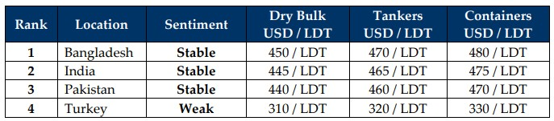

inWeekly Demolition Reports27/01/2025

President Trump has finally taken power this week and amidst the ongoing rhetoric / far-fetched aims of the incomingadministration including a few executions i.e. withdrawal of the U.S. from the Paris Climate Accords, the WHO, and even renaming the Gulf of Mexico to Gulf of America, some rather interesting moves aimed at what will likely eventually affect the global shipping industry seem to be lining up as a focus on an ‘America First’ policy and intended wave of tariffs on China, Canada, and Mexico will clearly create volatility for the global economy. While former President Biden’s farewell sanctions on Russia / Russian Shipping and Energy firms as well as China’s COSCO Energy just prior to leaving office, has now left / will leave a growing shadow fleet (particularly of wet vessels) who will have no discernable solutions for exit from trade, or even existence when the time eventually comes). As threats of trade wars loom, global shipping already seems to be reacting in kind with the Baltic Dry Exchange falling to its lowest since February 2023, marking a clear shift towards easing freight rates as a gradually increasing number of over-aged assets have been making their way towards the bidding tables since the start of 2025. Incoming Chinese New Year holidays has predictably seen an accelerated purging of older assets from Far Eastern waters including all those coming off charter amidst declining rates. Even oil futures that rapidly rose on the back of recent U.S. sanctions, saw a minor cooling this week as levels fell to $74 / barrel and President Trump urges Saudi Arabia to lower the price of oil whilst America’s “drill baby drill” motto trudges on.
In the meantime, fundamentals continue to remain jittery amidst a likely interest rate cut by the U.S. Feds and the U.S. Dollar continues to shake global ship recycling currencies as some impressive gains against the Dollar were registered while others continue to shatter records, in an Indian sub-continent ship recycling market that continues to feel the strain of an increasing number of candidates for a recycling sale, particularly from Panamax bulkers and now, likely containers in the near future. The imminent easing / reopening of traffic through the Red Sea shipping lanes following the truce in Gaza is likely to be bad news for many container operators who have been raking in 2024s charter highs, and this is certain to eventually see a slew of containers head for recycling after an extraordinary last few years of earnings – although experience tell us that the effects from this should take 3-4 months to filter through to recycling markets, at least with most vessels still on TCs.
Overall, sentiments remain of an eagerness that is shackled by economic uncertainty and despite an increasing supply of tonnage earmarking the present, unraveling indications have simply failed to fuel the expected volume of sales, as disappointed ship owners and cash buyers of expensive inventory reevaluate further moves as the (residual) values on their assets are just not what they were hoping to see in 2025, especially since USD 600/Ton is only a dream from a year ago. Many have been expecting 2025 to gear up to be a busier year than the last two of inertia and inactivity, despite delayed infrastructure developments that remain in the works. As Bangladeshi recyclers now risk NOC bans and prices across sub-continent markets seem unmotivated, it is likely to be just as volatile a year of unpredictable movements / events, which should in turn see prices, sentiment, and demand belly dance week after week.
For Week 4 of 2025, GMS Market Rankings / vessel indications are as below.

📄 Download PDF: Ship-recycling-market-insight-Week-03-01-24-2025-Power_Shift.pdf
Source: GMS,Inc.https://www.gmsinc.net/gms_new/index.php/web